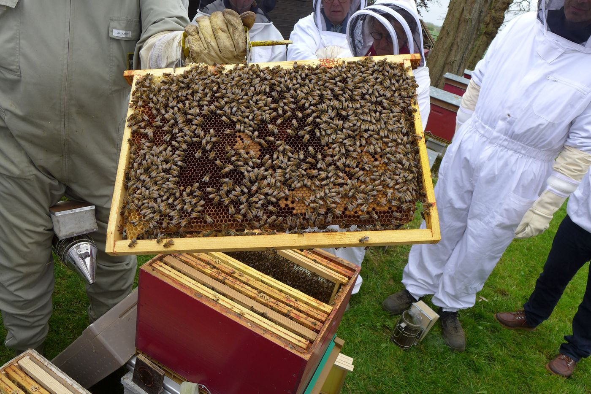

Cours au rucher école
Cours théoriques l'hiver, puis cours pratiques au rucher école de Beauvais pour mettre la théorie à l'épreuve, pas à pas.
La formationLes piqués-passion de l'apiculture en Oise
Oise Apicole réunit les apiculteurs amateurs et semi-professionnels du département pour se former auprès des plus expérimentés, s'équiper ensemble et protéger les colonies.
Au sein de l'association, chacun progresse à partir de l'expérience des aînés, jusqu'à sa première récolte. Comme on le dit chez nous : « 50 apiculteurs, 50 façons de faire ».

Cours théoriques l'hiver, puis cours pratiques au rucher école de Beauvais pour mettre la théorie à l'épreuve, pas à pas.
La formation
Matériel apicole, produits sanitaires, candis et sirops à tarifs négociés, remis lors des journées de distribution.
En savoir plus
Varroa, frelon à pattes jaunes, nouvelles menaces : les informations du GDSA 60 et les plans de lutte.
Espace sanitaire

Les pompiers n'interviennent pas pour un essaim d'abeilles, qui ne présente pas de danger immédiat. Les apiculteurs de votre canton peuvent venir le récupérer et ainsi sauver les abeilles.
Trouver un cueilleur d'essaimsFormations, visites, appui technique, commandes groupées et rencontres entre passionnés. Le nombre de places en formation est limité.